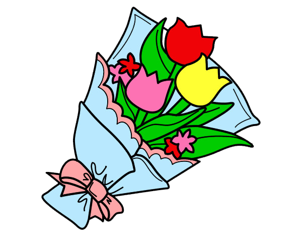
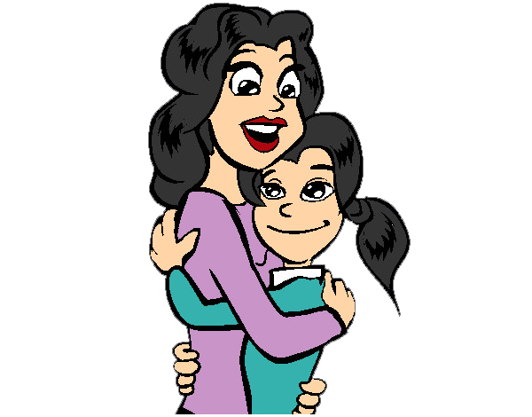
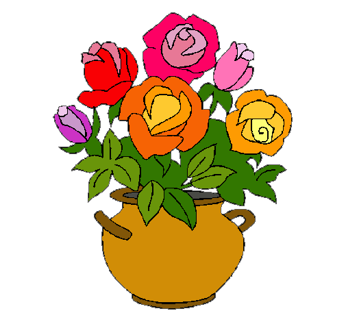

LA PRIMAVERA Y LAS FLORES DEL CAMPO
LA PRIMAVERA Y LAS FLORES DEL CAMPO LA PRIMAVERA Y LAS FLORES DEL CAMPO
Laura le dijo a Sara: “Sara, voy a hacer un ramo de flores muy grande para mi mamá“.
Entonces Sara le contestó: “Qué buena idea Laura, pues yo también le haré uno para mi madre“.
Las dos niñas estaban entusiasmadas con hacer un ramo de flores del campo para llevárselo a sus mamás, de hecho, Laura le dijo a su amiga: “tenemos que hacer un ramo de flores muy bonito y muy grande. Cogeremos flores de distintos colores, amarillas, rojas, blancas y haremos un ramo que refleje los colores de la primavera“.
Sara, mientras hacía el ramo de flores para su mamá, se acordó de su profesora, de lo bien que explicaba y de las veces que había ayudado a Laura y Sara cuando no conseguían resolver los problemas que les ponía. Así que se quedó pensando un momento y dijo: “Laura, podríamos hacer también un ramo de flores para llevárselo a la profesora al colegio, ¿qué te parece?“.
Laura respondió: “claro que sí, hagámosle también uno para ella“.
Las dos amigas hicieron juntas el ramo de flores para la profesora y cuando terminaron se fueron a sus casas.
Al día siguiente, Sara y Laura llevaron al colegio el ramo de flores que le habían preparado a su profesora Milagros, la cual mostró su alegría por el regalo que sus alumnas le habían hecho, pues las flores le gustaban mucho. Así que cogió un jarrón , lo llenó de agua y puso las flores en su mesa, mostrándose muy orgullosa de Laura y Sara.